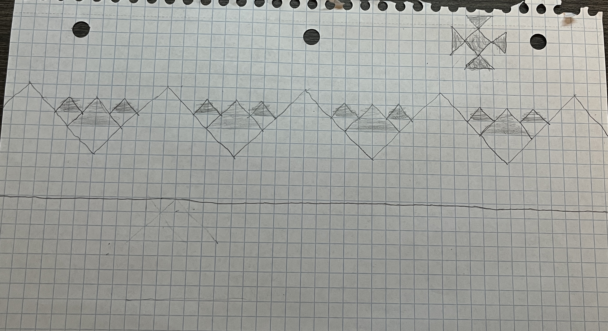

Surya Pugazhenthi
spugazhe@ucsc.edu
Notes to Grader:
All required painting functionality is implemented and tested. I added an alpha slider for color transparency (awesomeness).
Red: Green: Blue:
Opacity:
Size:
Shape: Point Triangle Circle
Circle Segments:
Clear Canvas

Draw My Picture